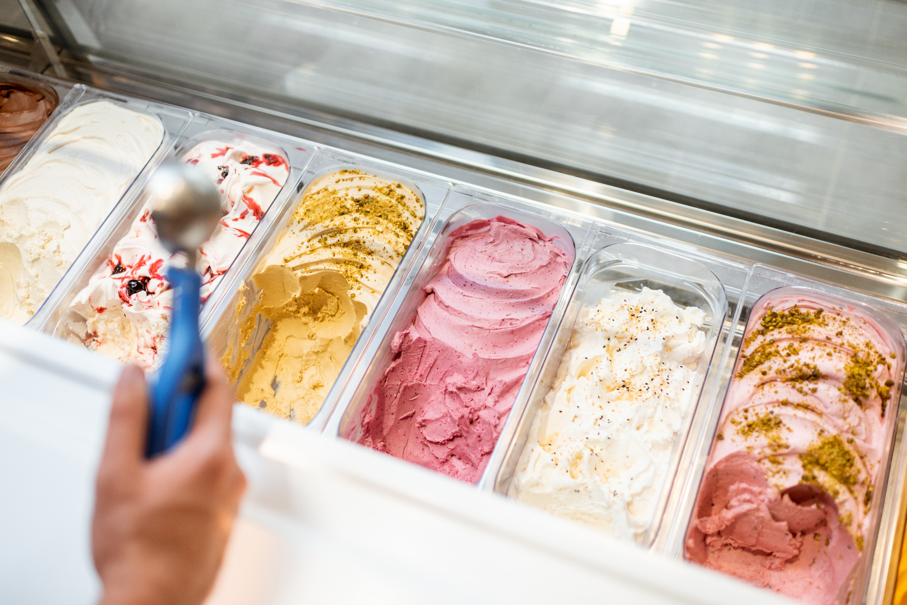
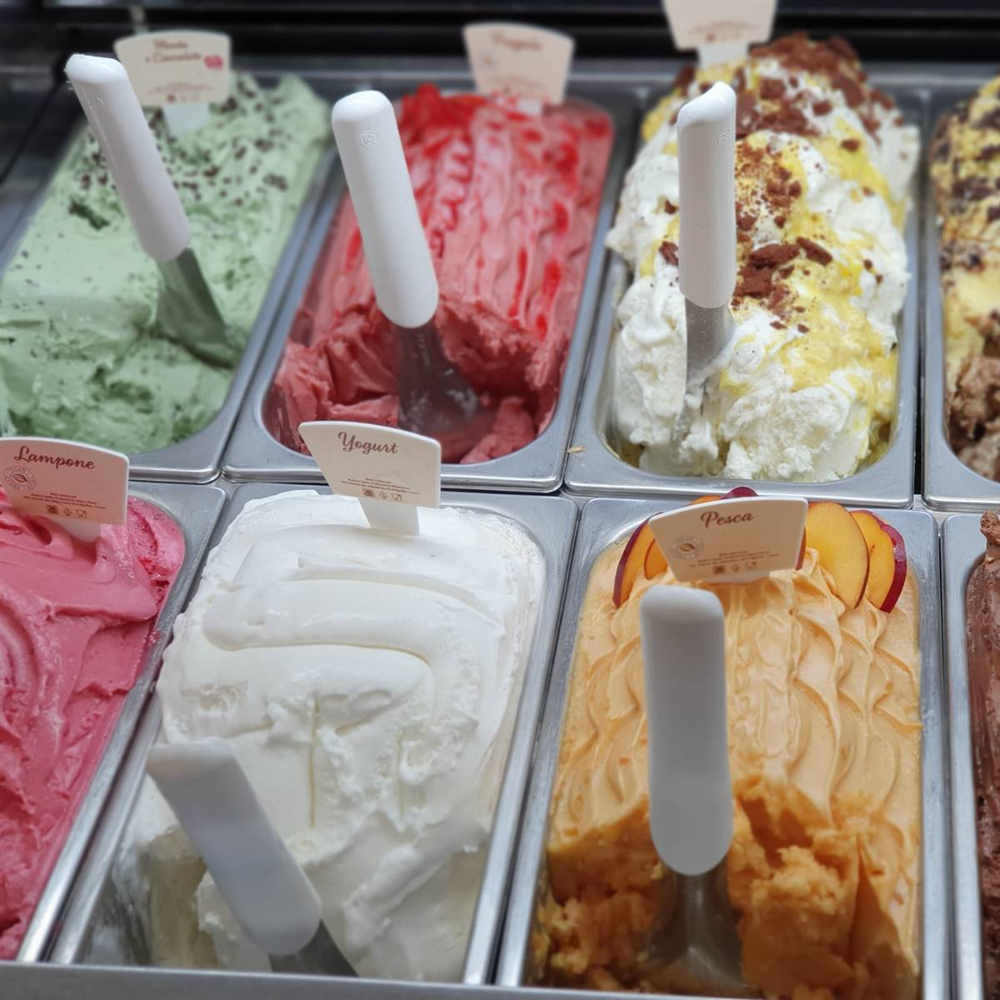
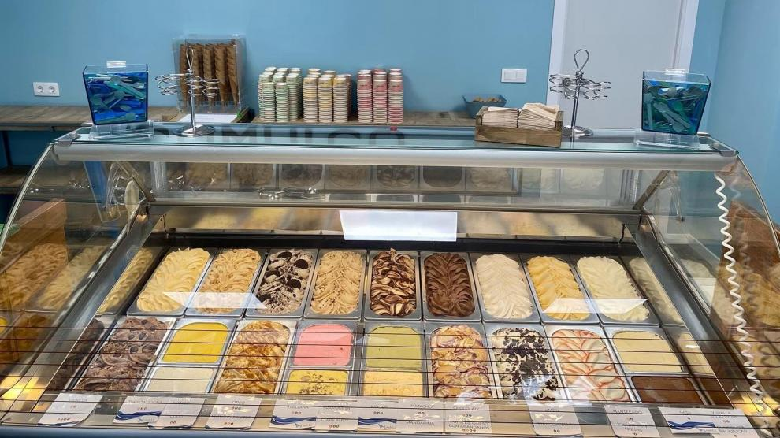
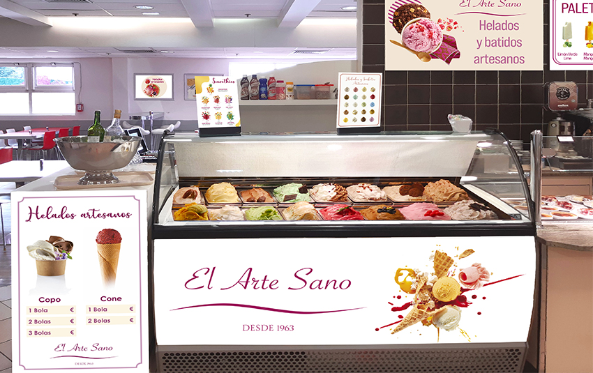

La heladería "Dulce Sabor" es un lugar encantador que deleita a todos los amantes de los helados.Esta heladería se destaca por ofrecer una amplia variedad de sabores exquisitos y unicos que satisfacen los paladares mas exigentes.
|  |
Al entrar a "Dulce Sabor", seras recibido por un ambiente acogedor y vibrante. Las paredes estan decoradas con colores brillantes y murales que evocan la alegría y la frescura de los helados. El aroma dulce y tentador de los helados recien hechos llena el aire, despertando tus sentidos y haciendote desear probar cada uno de sus sabores.
El mostrador de la heladería esta repleto de coloridos recipientes que albergan los helados artesanales. Desde los clásicos como vainilla, chocolate y fresa, hasta sabores mas atrevidos como maracuya, dulce de leche salado y mango con chile, la variedad es infinita. Además, "Dulce Sabor" también ofrece opciones sin lactosa y sin azucar para aquellos con necesidades dietéticas especiales.
|  | DIVERSIDAD DE SABORES |
|---|
Una vez que hayas elegido tu sabor favorito, podras disfrutar de tu helado en el acogedor salon interior o en la terraza al aire libre con mesas y sillas comodas. Tambien puedes optar por llevar tu helado en un cono o en un envase para disfrutarlo mientras das un paseo por la ciudad. La heladeria "Dulce Sabor" se enorgullece de utilizar ingredientes frescos y de alta calidad en la elaboración de sus helados. Cada cucharada esta llena de sabor y textura cremosa, lo que hace que cada visita sea una experiencia deliciosa y memorable.
Ya sea que busques refrescarte en un dia caluroso o simplemente quieras darte un capricho dulce, "Dulce Sabor" es el lugar perfecto para satisfacer tus antojos de helado. !Ven y descubre la magia de esta heladeria unica en su clase!
 HELADERIA DULCE SABOR
|
Machachi - Ecuador 4565435612 CONTACTOS |
|---|